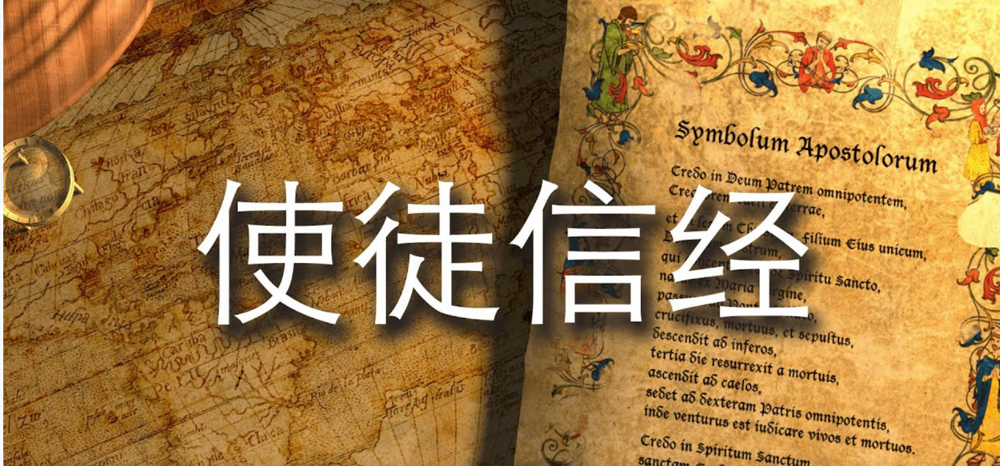
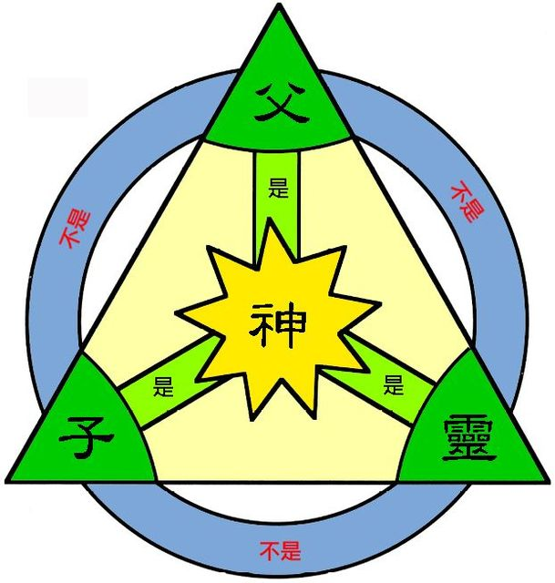
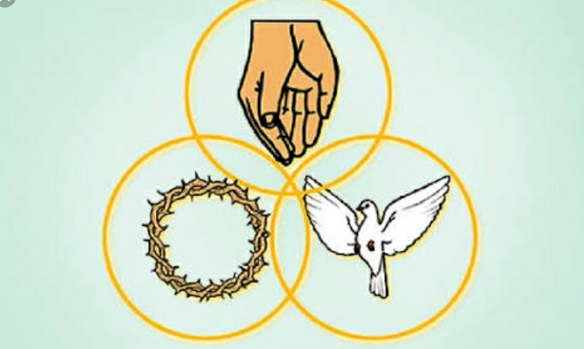
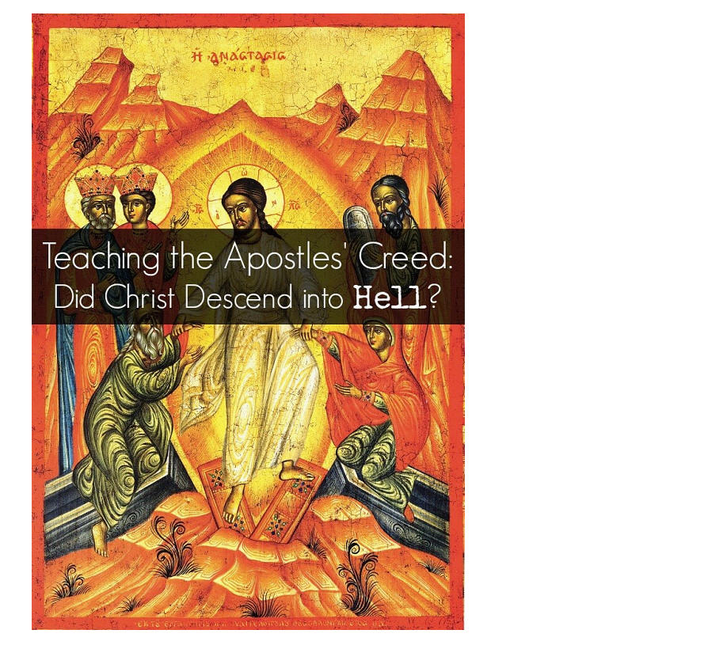
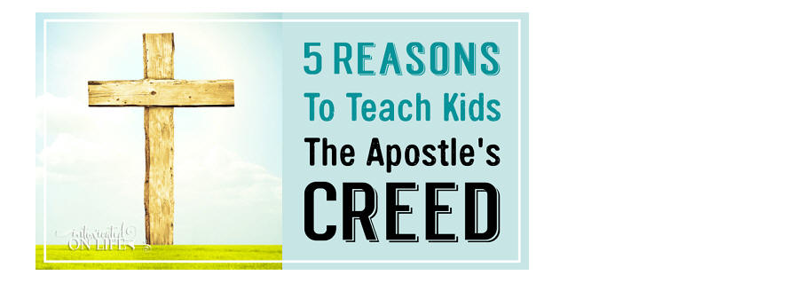

T3四寶之三 《使徒信經》 第1課
課程簡介：本課涵蓋基礎聖經內容，幫助學習者理解歷史或教義。
課程內容
前言
介紹課程的核心概念，請記錄筆記。
第1節
介紹課程的核心概念，請記錄筆記。

03【使徒信經】動作版 A - Walk Through [Apostle’s Creed] -Bước Qua［Kinh Tin Kính của các Tông đồ］
|
|
|
|
|
|
|
我信上帝， |
I believe in God, |
Tôi tin Đức Chúa |
|
|
|
the Father almighty, |
Trời toàn năng là Cha, |
|
|
全能的父， 創造天地的主； |
creator of heaven and earth. |
là Đấng dựng nên trời đất. |
|
|
我信我主耶穌基督， |
I believe in Jesus Christ, |
Tôi tin Jêsus Christ |
|
|
上帝獨生的子； |
his only Son, our Lord, |
là Con độc sanh của Đức Chúa Trời, là Chúa chúng ta; |
|
|
因聖靈感孕， |
who was conceived by the Holy Spirit |
Ngài được thai dựng bởi Thánh Linh, |
|
|
由童貞女馬利亞所生； |
and born of the virgin Mary. |
sanh bởi nữ Đồng trinh Mari, |
|
|
在本丟彼拉多手下受難， |
He suffered under Pontius Pilate, |
chịu thương khó dưới tay Bôn-xơ Phi-lát, |
|
|
被釘於十字架， |
was crucified, died, and was buried; |
bị đóng đinh trên Thập tự giá, chịu chết và chôn; |
|
|
受死，埋葬；降在陰間； |
he descended to hell. |
Ngài xuống âm phủ; |
|
|
第三天從死人中復活； |
The third day he rose again from the dead. |
đến ngày thứ ba;
|
|
|
升天， |
He ascended to heaven |
Ngài thăng thiên, |
|
|
坐在全能父上帝的右邊； |
and is seated at the right hand of God the Father almighty. |
ngồi bên hữu Đức Chúa Trời toàn năng là Cha; |
|
|
將來必從那裏降臨， |
From there he will come |
từ đó, Ngài sẽ trở lại |
|
|
審判活人死人。 |
to judge the living and the dead. |
để xét đoán kẻ sống và kẻ chết. |
|
|
我信聖靈； |
I believe in the Holy Spirit, |
Tôi tin Thánh Linh. |
|
|
我信聖而公之教會； |
the holy catholic* church, |
Tôi tin Hội thánh phổ thông, |
|
|
我信聖徒相通； |
the communion of saints, |
sự cảm thông của thánh đồ, |
|
|
我信罪得赦免； |
the forgiveness of sins, |
sự tha tội, |
|
|
我信身體復活； |
the resurrection of the body, |
sự sống lại của thân thể, |
|
|
我信永生。 |
and the life everlasting. |
và sự sống đời đời. |
|
|
阿們！ |
Amen |
Amen. |
|
|
|
|
|
===================================================
使徒信经 (动作版) 解说
本单张教材，尽量不要在学习前派发，学员应该在背诵了使徒信经后才可获得。
|
|
使徒信经 |
动作 |
基本真理教导要点 |
|
1 |
我信上帝， |
用一只手用力拍着，并按在心胸上，表示「我信」的实在。用另一只手单指（食指）高举向上，表示只有一位神。 |
1. 上帝代表我所信仰的对象。 2. 我们经验到上帝的存在。 |
|
1.1 |
全能的父， |
两手包拳，伸在腰傍，如孔武有力之人，亦如抱婴孩之慈父。 |
1.「父」的意义。 2. 「全能」的意义。 |
|
1.2 |
创造天地的主。 |
两掌上下互合，再向上下分离，如分门别类，像创世时之分开光和暗等。 |
1. 上帝是宇宙万物的创造者。 2. 祂也是宇宙万物的掌管者。 |
|
2 |
我信我主耶稣基督， |
用一只手用力拍着，并按在心胸上，表示「我信」的实在。用另一只手单指（食指）高举向上，表示只有一位神。 |
1.「耶稣」(Jesus)名字就是「耶和华拯救」。2. 「基督」(Christ)就是「弥赛亚」(Messiah) ３.「主」代表「所有权归祂」,「优先权在祂」,「指挥权属祂」。 |
|
2.1 |
上帝的独生子； |
将单指（食指）转到眼前，表示独一。 |
1. 「独」表「唯一位格」。 2. 「生」表「非受造的」：。 3. 「子」表「与父同质」。 |
|
2.2 |
因着圣灵感孕， |
高举两只手，手指公互相勾在一起，掌心向外，高举过头，双掌拨动，向下直到肚前。喻意圣灵如鸽子降落。 |
1. 耶稣的降生不是从人的遗传而来。 2.「圣灵感孕，就是「道成肉身」。 3.「圣灵感孕」别于「生在罪中」。 |
|
2.3 |
从童贞女马利亚所生； |
再两掌向上，在肚脐前面，左右互迭，由左边移向右则，如抱初生婴孩摇曳。 |
1. 神自己预备献祭的羔羊。 2. 借着耶稣的「道成肉身」，使人看到神创造的能力进入了世界。 |
|
2.4 |
在本丢彼拉多手下受难， |
两手互握，向前伸出，如被捆绑。 |
|
|
2.5 |
被钉在十字架上，受死， |
两手伸出，如被钉十字架。 |
1. 十字架本是「咒诅」的象征。 2. 十字架今是「得救」的记号。 |
|
2.6 |
埋葬；降在阴间； |
两手垂下，同时身体湾下，蹲下，如卷曲到地上。 |
1. 耶稣的「受死、埋葬」表明他是完全人：祂完成天父旨意：是为复活作预备。 2. 「阴间」是人死后，灵魂暂时的「居间之境」， 3. 耶稣「降在阴间」也表明他「道成肉身」的任务到此结束。 |
|
2.7 |
第三天从死里复活； |
卷曲到地上时，先伸出三只手指，然后身体慢慢起来，两手张开到胸前。 |
1. 「第三日」在属灵上的意义：也在属灵上的必要： 2.「耶稣复活」是人类历史上最大的事件：是预表信徒也将如此复活。 |
|
2.8 |
升天， |
在肚前位置，两手伸出食指，互相并列，并慢慢升上到眼前位置。 |
2. 「耶稣升天」重大意义在代表「道成肉身」的时代结束；也代表 「道成那灵」的时代开始。 |
|
2.9 |
坐在全能父上帝的右边； |
两手相合，如祷告，倾向自己右边。 |
1. 「右边」所代表「蒙悦纳」的位子；「得胜者」的位子；「掌权者」的位子； 2. 「右边」所代表的职位：祂是为万民代求的大祭司；b祂是神人之间唯一的中保。 |
|
2.10 |
将来必从那里降临， |
将两手之食指，互相并列，在头部位置慢慢降下到胸前。 |
1. 空中再临：目的在拯救地上教会。 2. 地上再临：目的在拯救以色列人。 |
|
2.11 |
审判活人，死人。 |
左手伸出，手掌向上，右手食指伸出，先点左掌之上，再点右掌之下。 |
1. 审判活人：活人是指生前已经信主的人，为有灵的活人。 2. 审判死人：死人是指生前尚未信主的人，神视他们为无灵的死人。 |
|
3 |
我信圣灵； |
用一只手用力拍着，并按在心胸上，表示「我信」的实在。 再用两只手，手指公互相勾在一起，掌心向外，高举过头，双掌拨动，向下宜到胸前。喻意圣灵如鸽子降落。 |
「圣灵与圣徒」的关系 1. 引导人悔改： 2. 教导人真理： 3. 荣耀主耶稣： |
|
4 |
我信圣而公之教会； |
用一只手用力拍着，并按在心胸上，表示「我信」的实在。 再用两只手，高举过头，中指互碰，如一间屋顶。喻意教会是一个家。 |
1.「圣」是指「分别为圣」，「圣」是表「圣洁属神」： 2.「公」是指「普世性」：「公」是表「公平性」： 3. 教会是「一」(unity) |
|
5 |
我信圣徒相通； |
用一只手用力拍着，并按在心胸上，表示「我信」的实在。 伸出双肘，一只手捉着另一肘，在互捉肘时，慢慢左右移动。喻意信徒彼此提携支持。 |
1. 「圣徒」:「信基督的人」他们是「分别为圣」 2, 「相通」就是「互通有无」，「团契」(fellowship)，具有「生命共同体」之意 |
|
6 |
我信罪得赦免， |
用一只手用力拍着，并按在心胸上，表示「我信」的实在。 跟着两手掔掔互勾，好像被困厄着。 然后两手大力甩脱。喻意罪得赦免。 |
1. 「罪层次」的分类 2. 「罪得赦」的条件 3. 神的救赎计划： 4. 人的得救要件： |
|
7 |
我信身体复活； |
用一只手用力拍着，并按在心胸上，表示「我信」的实在。 然后整个人湾下到腰部，两手下垂如死去，再伸起上身，两手打开向上到腰部。喻意身体复活。 |
一. 「全人得救」的意义 1. 「灵」的得救 2. 「魂」的得胜： 3. 「体」的得赎： 二、「身体复活」的奥秘 |
|
8 |
我信永生。 |
用一只手用力拍着，并按在心胸上，表示「我信」的实在。 再伸起上身，两手打开向上到头部，昂头，两眼向天望。喻意将来永生。 |
一、「永生」的意义 1. 是上帝的「生命本质」： 2. 是上帝的「恩典礼物」： 3. 是上帝的「国度权势」： |
|
|
阿们！ |
|
诚心所愿 |
使徒信经(动作版)目的
一. 使徒信经(动作版)目的：
-
帮助新信徒在１５至３０分钟内背诵使徒信经。又帮助他们几后在敬拜，唱诗，听道，究读圣经时，对信仰教义有初步的了解。
-
帮助旧信徒温习信经，通过导师或助教每步的解释，了解每一句的的重要意义，了解信仰与教义的纲领。并且能够重复教导别人。
-
帮助教导使徒信经的导师，通过动作的解说，深入每一句的关系，
-
并能鼓励学员在教导别人（作助教）时，自己继续深入研究使徒信经的内容与实践。
二. 基本布局：
-
找三样东西，大小均可，如三张椅，三块石头，放在三个角落。
-
喻义是表示三位一体上帝的传统意象。
三. 三角基本位置意义与教导：
-
学员或演示者要在几个位置表示
-
三个角落，表示神的三位。
-
在三个角落内，表示在神的同在。
-
走出三个角落外，表示有使命感的外展。
-
藉三角位置与次序选择，教导三位一体的教义。
四. 基本动作：
-
在演示「我信」三位一体神时：用一只手用力拍着，并按在心胸上，表示「我信」的实在。
-
用另一只手单指（食指）高举向上，表示只有一位神，同一位神。
-
在演示其他「我信」时，先用一只手用力拍着，并按在心胸上，表示「我信」的实在。再做其他动作。
-
其余的字句，是一面背诵，一面演示该句的意义，动作随字词而慢慢转变。
使徒信经的意义
-
「使徒」有「传承正统信仰」的使命，
-
「信经」(Creed)来自拉丁文Credo，其意思就是「我信」，
-
所以「使徒信经」就是基督徒「正统信仰」的告白，因此每节皆以「我信」为始。
-
信经的地位次于圣经，也不能取代圣经，但却为大家所接纳与公认的「信仰宣告」。
-
在教会历史中前后有多次不同版本的「信经」出现，直到主后第八世纪才正式成为今日许多教会所使用的「使徒信经」内容。
使徒信经的功用
1. 崇拜中的统一认信：
在崇拜中众信徒异口同声颂读「使徒信经」，是一种美好的见证。表明整个群体皆是源于同一信仰，聚在一起，同心合意敬拜真神。
2. 教导中的信仰大纲：
「使徒信经」是一个完整的信仰大纲，用浅显易懂的文字，精简又全备的把基督教的核心信仰勾画出来，使任何人，就是认字不多者，也能藉此来认识真神。
3. 辨别异端的试金石：
初代教会有许多异端出现，混淆了信徒的思想，导致部分羊群迷失方向。于是有识之士先后根据圣经，将核心信仰整理成简洁有力的「信经」，其中「使徒信经」是最精简的一种。今日的基督徒依然有面对异端邪说的可能，借着「使徒信经」可以帮助信徒，在核心信仰上能分辨真伪。
主要来源：基督徒灵粮补给站 使徒信经

「三位一体」是一神的概念。
但因「三位一体」易被误会成「神有三位」，所以渐渐已少用「三位一体」这个词，而是渐渐使用「三一神」这个词。
三位一体是圣经的神默示的, 神学家只是传讲圣经的话不是发明家.
父、子、圣灵，乃是＜圣经＞的启示。
＜圣经＞中的圣父、圣子、圣灵间的关系乃是奇妙。
＜圣经＞一方面启示圣父、圣子、圣灵有区别，圣父非圣子，圣灵非圣子；
但另一方面＜圣经＞亦启示了
-
圣子就是圣父 (约14:9;赛九6;约1:18;创18:1)、
-
圣子就是圣灵 (林后3:17;6:7)、
-
圣灵就是圣父(徒28:25,赛6:9;来4:7)。
-
圣子出于圣父, 也出于圣灵;
-
圣灵出于圣子 (约16:28;太1:20;约20:22)。
这乃是奥秘，若圣灵不向他启示, 不易领会。
三一神住在信徒里
-
父、子、圣灵都住在信徒里 (弗4:6;约14:17;林前3:16;加2:20;罗8:9-11;提后1:14;约壹3:24;结36:27;来13:21)
-
父、子、圣灵赐生命给信徒(罗8:11;)、
-
父、子、圣灵赐口才与智慧给人 (路21:15;12:12;可13:11;太10:20)
-
父、子、圣灵在一个名里 (太28:19)
-
父、子、圣灵差遣信徒 (徒10:19;13:2~4;22:21;).
使徒信经，十诫与，主祷文
◆‧使徒信经是我们信仰的宣告， 十诫是我们奉为圭臬的行为准则， 主祷文是我们对异象盼望的祷告。
◆‧使徒信经是基督教信仰的核心， 十诫是基督教伦理的核心， 主祷文是基督教异象的核心。
◆‧使徒信经是代表基督徒的信心， 十诫是代表基督徒的爱， 主祷文是代表基督徒的盼望。
《使徒信经》（漫画）简介
第2節
結合聖經經文加深理解。
使徒信经(The Apostles'Creed )
基本真理教导
(参考教材)
|
|
|
|
|
|
为什么要读使徒信经 |
使徒信经的意义「使徒」有「传承正统信仰」的使命，「信经」(Creed)来自拉丁文Credo，其意思就是「我信」，所以「使徒信经」就是基督徒「正统信仰」的告白，因此每节皆以「我信」为始。 信经的地位次于圣经，也不能取代圣经，但却为大家所接纳与公认的「信仰宣告」。在教会历史中前后有多次不同版本的「信经」出现，直到主后第八世纪才正式成为今日许多教会所使用的「使徒信经」内容。 |
|
|
使徒信经的功用 |
使徒信经的功用1. 崇拜中的统一认信：在崇拜中众信徒异口同声颂读「使徒信经」，是一种美好的见证。表明整个群体皆是源于同一信仰，聚在一起，同心合意敬拜真神。 2. 教导中的信仰大纲：「使徒信经」是一个完整的信仰大纲，用浅显易懂的文字，精简又全备的把基督教的核心信仰勾画出来，使任何人，就是认字不多者，也能藉此来认识真神。 3. 辨别异端的试金石：初代教会有许多异端出现，混淆了信徒的思想，导致部分羊群迷失方向。于是有识之士先后根据圣经，将核心信仰整理成简洁有力的「信经」，其中「使徒信经」是最精简的一种。今日的基督徒依然有面对异端邪说的可能，借着「使徒信经」可以帮助信徒，在核心信仰上能分辨真伪。
|
|
|
我信上帝 |
一、我信「上帝」1. 代表我所信仰的对象，祂是独一的真神，称为「耶和华」，是「自有永有」、「昔在、今在、永在」的活神。2. 我们经验到上帝的存在，正如儿女对他们的父母那样的自然。圣经说：「人非有信，就不能得上帝的喜悦，因为到上帝面前来的人，必须信有上帝，且信祂赏赐那寻求祂的人。」（来11:6）人与人要彼此认识相交，必须由「信」开始。人与神的关系亦同，也是要由「信」开始。人到神面前来，首先必须相信祂在圣经中的「自我启示」，才能进一步来认识祂、与祂建立美好的关系。
配合诗歌001 【有一位神】 (6-19) There Is a God Key: D 4/4 有一位神，有权能创造宇宙万物，也有温柔双手安慰受伤灵魂。 有一位神，有权柄审判一切罪恶，也有慈悲体贴人的软弱。 副歌： 有一位神，我们的神，唯一的神，名叫耶和华。 有权威荣光，有恩典慈爱， 是昔在今在永在的神。 |
|
|
全能的父 |
二、「全能的父」1.「父」的意义：a. 生命的源头；万有都本于祂，倚靠祂，归于祂。(罗11:36) b. 贴心的看顾；天父对祂儿女的照顾如同父亲对子女的心。 c. 亲密的称呼；你们所受的，不是奴仆的心，仍旧害怕；乃是儿子的心。(罗8:15) 2. 「全能」的意义：上帝「是」能力，而人「有」能力；「是」就一定「有」，而且这个能力不会因使用过后而减少，所以称为「全能」。但是人的能力是有限的，会因使用而逐渐减少的，甚至完全消失。所以人的能力达到极限只能称为「万能」，表明这个能力有大小的差别。
配合诗歌002 【全能父上帝】 Reign, King Jesus Reign Key: D 4/4 全能父上帝，昼夜掌管天地万邦。 全能父上帝，昼夜掌管天地一切。 副歌： 万国也赞美主，光辉普照在世间； 我要敬拜祂，屈膝称赞上帝恩。 要让全地欢腾荣耀主，国度全属你。 |
|
|
创造天地的主 |
三、「创造天地的主」圣经开宗明义说：「起初，上帝创造天地。」（创1:1）这世界及其上的一切，都是神从「无有」（nothing）创造出来的。是借着祂的「言语」所造，祂说：「要有光，就有光。」（创1:3）；祂说：「地要有青草，水中要有生物，空中要有飞鸟，地上要有走兽。」事就这样成了。最后神用地上的尘土造人，将生气吹在他鼻孔里，就成了有灵的活人。先知以赛亚描述上帝是这样的一位创造者：「我造地，我又造人在地上，我亲手铺张诸天，天上万象也是我所命定的。」（赛45:12）可见上帝不但是宇宙万物的创造者，祂也是宇宙万物的掌管者，所以我们可以称祂为「天地的主」。 人关心创造的问题本是自然的，原因有二：1. 人总是关心「我本从那里来？」：人若不知道自己的亲生父母是谁，他必定会想尽办法去寻根。谁是赐生命的源头呢？基督徒都知道这个答案：天父。 2. 人也会关心「我将住何处去？」：人死后，尸体入土为安，归于尘土，但灵魂要往那里去呢？基督徒都知道这个答案：主耶稣还要再来接我们回天家。
配合诗歌：
|
|
|
我信我主耶稣基督 |
一、我信「耶稣是基督」1. 对现代人而言，「耶稣」这个名字是神圣的，但在耶稣那个时代，有许多犹太人喜欢取这个名字。「耶稣」(Jesus)是希腊文(Greek)，和希伯来文(Hebrew)的「约书亚」(Joshua)是同样的意思，就是「耶和华拯救」。主的使者曾向约瑟显现，告诉他说：「你的妻子马利亚将要生一个儿子，你要给他起名叫耶稣，因他要将自己的百姓从罪恶里救出来。」(太1:21) 2. 「基督」(Christ)是希腊文，和希伯来文的「弥赛亚」(Messiah)是同样的意思，就是「受膏者」(the anointed)。在犹太人的历史上，先后有三种人需要「受膏抹」，来担任神所「分别为圣」的职务，他们分别是先知、祭司、君王。旧约的撒母耳是先知兼祭司，大卫王则是身兼三职。但在北国以色列和南国犹大相继沦亡后，犹太人心中期盼着一位可以救他们脱离罗马帝国统治的「民族救星」的基督。耶稣第一次降世为人是要为世人解决在神面前罪的问题，是做「世人的救主」，不是做「犹太人的救星」，所以犹太人拒绝接受他的救恩自有其历史的背景和民族的包袱。但耶稣基督还会二次降临，其目的在实现神在旧约时代对祂选民的应许。祂曾对大卫说：「你寿数满足与你列祖同睡的时候，我必使你的后裔接续你的位；我也必坚定他的国，他必为我的名建造殿宇；我必坚定他的国，直到永远。」(撒下7:12-13) |
|
|
上帝的独生子 |
二、我信「耶稣是上帝的独生子」1. 「独」表「唯一位格」：圣父只有一位 (约17:3)，圣子只有一位 (约3:16)，圣灵也只有一位 (弗4:4)。 2. 「生」表「非受造的」：圣父、圣子、圣灵都是「创造者」；圣父是「自有永有」 (出3:14)，圣子是「从父而生」(诗2:7)，圣灵是「从父而出」(约20:21)，也是「从子而出」(约16:7)。 3. 「子」表「与父同质」：圣父是上帝，圣子是上帝，圣灵也是上帝，并且三个位格的上帝是「同尊同荣」。 三、我信「耶稣是主」1. 「主」代表「所有权归祂」：耶稣用自己的生命，把我们从「罪」与「死」中买赎回来，所以我们的所有权是属于祂的。 2. 「主」代表「优先权在祂」：我们凡事要以耶稣基督为首位，不可将个人的名声、前途、家庭、子女等与基督耶稣并列，甚至重视这些超过我们的主。 3. 「主」代表「指挥权属祂」：我们不再偏行己路，行事为人都当遵照「神的旨意」而行，过一个讨神喜悦的基督徒生活。
配合诗歌：
|
|
|
着圣灵感孕 |
一、「因圣灵感孕」1. 耶稣的降生不是从人的遗传而来，有别于一般的世人。在圣经中，不从人意而生的只有三个人：一个是人类的「始祖亚当」和一个为亚当所造的「女人夏娃」，另一个就是人类的「救主耶稣」。 2. 耶稣是「上帝的独生子」，又是「因圣灵感孕」，代表「上帝」、「耶稣」、「圣灵」是同质的。在「救赎罪人」的计划上，神的「三个位格」都参与其中，正如在「创造世界」的计划上，「三位一体」的神都共同有份。 3. 「圣灵感孕」有双重意义：a. 「圣灵感孕」就是「道成肉身」；神的独生子在旧约时代称为「道」，「太初有道，道与神同在，道就是神。」(约1:1)如今「道成了肉身，住在我们中间，充充满满的有恩典、有真理。我们也见过他的荣光，正是父独生子的荣光。」(约1:14) b. 「圣灵感孕」别于「生在罪中」；亚当的后裔都是从肉身生的，因为亚当是在犯罪后才开始「生养众多，遍满地面」。所以肉身就是罪身，亚当的后裔都是生来就作「罪的奴仆」，因为「从肉身生的就是肉身，从灵生的就是灵。」(约3:6) |
|
|
由童贞女马利亚所生 |
二、「由童女马利亚所生」1. 神自己预备献祭的羔羊：基督来到世上的时候说：「上帝阿，…..你曾给我预备了身体。」（来10:5）耶稣是无瑕疵的祭物，祂凡事受过试探，与我们一样，只是祂没有犯罪，唯有这样的祭物，才能献在神面前，为人赎罪。 2. 神自己大有能力的彰显：神是全能的，祂可以用地上的「尘土造人」，可以使撒拉「老来生子」，也可以使马利亚「童女生子」。祂要借着耶稣的「道成肉身」，使人看到神创造的能力进入了世界。这是供给生命，也是唯一再造生命的力量。如同先知以西结所看到「枯骨复生」的力量，神说：「我必将我的灵放在你们里面，你们就要活了。」（结37:14）这种力量可以叫那些「死在过犯罪恶之中的人」(弗2:1)，借着重生而活过来。 3. 神赐下使人得救的途径：耶稣说：「我就是道路、真理、生命；若不借着我，没有人能到父那里去。」(约14:6) 耶稣是历史上的人物，道成肉身住在我们中间。他引导世人走上义路，教导世人认识上帝。「除他以外，别无拯救；因为在天下人间，没有赐下别的名，我们可以靠着得救。」(徒4:12)
配合诗歌003 【尊主歌】 Jesus, Merciful Key: G 4/4 耶稣最慈悲，耶稣最有情， 祂能感化我，除我铁石心。 2. 耶稣最勇敢，耶稣最聪明， 舍生救赎我，与我一同行。 3. 耶稣最体谅，耶稣最温柔， 与我同受苦，一同背轭头。 4. 耶稣最清洁，耶稣最公平， 创造新生活，领我进天城。 |
|
|
在本丢彼拉多手下受难 |
一、「在本丢彼拉多手下受难」1. 耶稣接受亚那的审问：犹太人的差役在夜里拿住耶稣，把他捆绑了，先带到亚那面前，因为亚那是当年作大祭司该亚法的岳父。亚那就以耶稣的门徒和他的教训盘问他。 2. 耶稣受大祭司的审问：拿耶稣的人再把他带到大祭司该亚法那里；文士和长老已经在那里聚会。大祭司对他说：「我指着永生神叫你起誓告诉我们，你是神的儿子基督不是？」耶稣对他说：「你说的是。」他们就吐唾沫在他脸上，用拳头打他。 3. 彼拉多首次审问耶稣：彼拉多是当年罗马派驻在耶路撒冷的总督。因犹太公会无权治人于死，于是一到早晨，他们就把耶稣捆绑解去，交给彼拉多。 彼拉多问他说：「你是犹太人的王吗？」耶稣回答说：「你说的是。」但是彼拉多找不到治死耶稣的罪名。 4. 希律王乘机审问耶稣：彼拉多知道耶稣是加利利人，是希律的管辖区。当时希律正好在耶路撒冷，于是把耶稣交给希律，耶稣却一言不答。祭司长和文士都站着，极力的告他。希律和他的兵丁就藐视耶稣，戏弄他，给他穿上华丽衣服，又把他送回彼拉多那里去。 5. 彼拉多二度审问耶稣：彼拉多想要释放耶稣，无奈犹太人喊着说：「你若释放这个人，就不是该撒的忠臣。凡以自己为王的，就是背叛该撒了。」他们喊着说：「除掉他！除掉他！钉他在十字架上！」于是彼拉多将耶稣交给他们去钉十字架。
配合诗歌：
|
|
|
被钉在十字架上 |
二、「被钉十字架」1. 十字架本是「咒诅」的象征：在耶稣那个时代，十字架是天下人间最残忍、也是最恐怖的刑罚。罗马公民认为它是绝对的羞辱，而犹太人看它是上帝的咒诅。原来十字架在当时只为两种人预备：奴隶与叛国者。 2. 十字架今是「得救」的记号：a. 赎罪与牺牲：「因他受的刑罚我们得平安，因他受的鞭伤我们得医治。」(赛53:5)耶稣为了我们的过犯承受原是我们应受的惩罚，人类对神的冒犯，神用祂独生爱子的生命来补偿。 b. 得胜的基督：十字架原是代表悲惨与屈辱，但是我们今日看到它却是感到信心与荣耀，因为十字架上的耶稣给予的新意义，那就是「耶稣复活」与「基督得胜」。 c. 上帝的慈爱：耶稣基督在十字架上承受了世间最惨的苦刑，尝尽被出卖、被抛弃、被嘲笑与被杀害的痛苦。这代表上帝虽然痛恨「罪」，却深爱着「罪人」。「神爱世人，甚至将祂的独生子赐给他们；叫一切信他的人不致灭亡，反得永生。」(约3:16)
配合诗歌：
|
|
|
受死，埋葬 |
一、「受死、埋葬」1. 耶稣的「受死、埋葬」表明他是完全人：耶稣是以「人性」的身份接受这样的苦难：因为祂是完全的人，所以祂不但会「受苦」，更会「断气而死」。在死后也同样以「人性」的方式，照着当地的习俗，裹尸安葬在洞穴里，结束了耶稣在世上三十三年半的日子。 2. 耶稣的「受死、埋葬」是完成天父旨意：世人的受苦与受死都是罪的工价，经上说：「这就如罪是从一人入了世界，死又是从罪来的；于是死就临到众人，因为众人都犯了罪。」(罗5:12)但耶稣的受苦与受死乃是神的旨意。经上说：「基督照我们父神的旨意为我们的罪舍己，要救我们脱离这罪恶的世代。」(加1:4) 3. 耶稣的「受死、埋葬」是为复活作预备：彼得后来讲道时，往往都以「耶稣的死」作开始（徒2:23；10:39），因为有了「受死」才有「复活」的可能。耶稣来到世上的另一个目的，就是为基督徒立下美好的典范。基督是「先受苦而后得荣耀」，是「先受死而后得复活」。
配合诗歌：
|
|
|
|
|
|
|
降在阴间 |
二、「降在阴间」1. 「阴间」是人死后，灵魂暂时的「居间之境」(intermediate state)。所有死去的人的灵魂都在「阴间」等候末日的审判。启示录最后提到：「海交出其中的死人，死亡和阴间也交出其中的死人。」(启20:13) 经文中的「海」是指魔鬼的国度，所交出其中的死人是指生前被鬼掳去之人的灵魂。经文中的「死亡和阴间也交出其中的死人」是指生前没有被鬼掳去之人的灵魂。 2. 「阴间」旧约希伯来文（sheol）是指「死亡之地」，为堆放死人的地方。「阴间」新约希腊文(hades)是指「死人的归路」。二者都不是指「地狱」，此字不曾出现在旧约圣经，但新约希腊文在表达「惩罚之地」时是用「苦难之地」（gehenna），此地原指耶路撒冷附近的「欣嫩子谷」（Hinnom），此处为燃烧垃圾的地方，终日燃火不熄，正如启示录所提到的「烧着硫磺的火湖」(启19:20)。这才是指「地狱」，是审判后「第二次的死」之人的去处。(启21:8) 3. 耶稣「降在阴间」是表明耶稣的确是「断气死在十字架上」。在新约圣经共有八处经文提到有关「耶稣在阴间」的记载 (约5:25) (徒2:27) (罗10:6-7) (弗4:8-10) (腓2:9-11) (彼前3:18-20) (彼前4:6) (启5:13)。 4. 耶稣「降在阴间」也表明他「道成肉身」的任务到此结束。耶稣也是「太初有道」，祂是神，祂有权到阴间去宣告「基督已得胜」的信息。经上说：「他藉这灵，曾去传道给那些在监狱里的灵听，就是那从前在挪亚豫备方舟，神容忍等待的时候，不信从的人。」(彼前3:19-20) 此句经文中的「传道」，在原文是指「宣告」(proclaim)，经文中的「监狱」不是指「地狱」，是指「灵魂被看守的地方」就是「阴间」。
配合诗歌：
|
|
|
第三天从死里复活 |
一、「第三日」1. 「第三日」在属灵上的意义：神在创世记用「六日」的次序来说明祂的复原工作，并且定规要人「六日」作工，第七日守为安息圣日。这「六日」可分为「前三日」与「后三日」，前后「三日」的头一日都出现「光」。第一日神说：「要有光」，就有了光。(创1:3)此处的光是神本身的光，可称为「光源」。第四日「神造了两个大光，大的管昼，小的管夜，又造众星。」(创1:16) 此处的光是受造的光，可称为「光体」。神在圣经一开始就启示这个「三」的数字，那是因为「三」是属神的数字，神是「三位一元」(Trinity)。因为是「神叫他从死里复活」(罗10:9)的，所以耶稣的死里复活必须是在死后的「第三日」。 2. 「第三日」在属灵上的必要：依照史实的考据：耶稣是在星期五「上午九时」(可15:25)被钉上十字架的，是在「下午三时」(路23:44)断气死亡的。因为翌日是安息日，所以犹太人就在当日下午将耶稣安葬在洞穴里。经上说：「七日的头一日」(太28:1)耶稣就复活了。若星期五是第一日，那星期日就是第三日。安息日是「七日的末一日」，耶稣说：「安息日是为人设立的，人不是为安息日设立的。」(可2:27) 但「七日的头一日」却是为耶稣设的，因为「他是元始，是从死里首先复生的，使他可以在凡事上居首位。」(西1:18) 二、「从死里复活」1.「耶稣复活」是人类历史上最大的事件：基督信仰之所以长存、教会历史之所以延续、信徒受苦之所以有盼望，完全是因为「耶稣复活」的缘故。复活代表「得胜」；胜过罪与死，所以使徒保罗说：「若基督没有复活，我们所传的便是枉然，你们所信的也是枉然。」(林前15:14)世上宗教的教主，死后都有尸体埋在坟里。他们的信徒若能找到教主身上的一根遗骨，就「如获至宝」。但是基督徒若能在耶稣的坟里，找到一根耶稣的遗骨，则整个基督教的信仰，就「全盘瓦解」。所以耶稣的「空坟墓」就成了我们基督徒「得救的记号」。 2.「耶稣复活」是预表信徒也将如此复活：经上说：「耶稣是从死里首先复活的。」(启1:5)「基督已经从死里复活，成为睡了之人初熟的果子。」(林前15:20)所有死去之人，因为还要复活，所以经上称为「睡了之人」。将来第一批复活的人是「那在基督里死了的人」。经上说：「因为主必亲自从天降临，有呼叫的声音和天使长的声音，又有神的号吹响。那在基督里死了的人必先复活。以后我们这活着还存留的人，必和他们一同被提到云里，在空中与主相遇。这样，我们就要和主永远同在。」(帖前4:16-17)
配合诗歌：
|
|
|
祂升天 |
一、「耶稣升天」1. 「耶稣升天」的经文记载：「他受害之后，用许多的凭据将自己活活的显给使徒看，四十天之久向他们显现，讲说神国的事。」(徒1:3)后来在橄榄山，众门徒的面前，「祂就被取上升，有一朵云彩把祂接去，便看不见祂了。当祂往上去，他们定睛望天的时候，忽然有两个人，身穿白衣，站在旁边说：『加利利人哪，你们为什么站着望天呢，这离开你们被接升天的耶稣，你们见祂怎样往天上去，祂还要怎样来。』」（徒1:9-11） 2. 「耶稣升天」的重大意义：a. 「道成肉身」的时代结束；耶稣说：「我从父出来，到了世界；我又离开世界，往父那里去。」(约16:28)从今以后，世上的人进入必须「单靠信心，不凭眼见」，的新时代。 b. 「道成那灵」的时代开始；耶稣脱离了时空的限制，现在祂借着「基督的灵」，就是「神的灵」，就是「圣灵」，与众圣徒同在。耶稣说：「我去，是与你们有益的，我若不去，保惠师就不到你们这里来，我若去，就差祂来。」（约16:7）
配合诗歌：
|
|
|
坐在全能父上帝的右边 |
二、「坐在上帝的右边」1. 「右边」所代表的意义：a. 「蒙悦纳」的位子；耶稣受洗时，天父从天上有声音说：「这是我的爱子，我所喜悦的。」(太3:17)耶稣在变相山时，天父从云彩里出来说︰「这是我的爱子，我所喜悦的，你们要听他。」(太17:5) b. 「得胜者」的位子；耶稣说：「我将这些事告诉你们，是要叫你们在我里面有平安。在世上你们有苦难；但你们可以放心，我已经胜了世界。」(约16:33)使徒约翰在启示录上记着说：「长老中有一位对我说：『不要哭。看哪！犹大支派中的狮子，大卫的根，他已得胜，能以展开那书卷，揭开那七印。』」(启5:5) c. 「掌权者」的位子；耶稣说︰「天上地下所有的权柄都赐给我了。」(太28:18)保罗说：「所以神将他升为至高，又赐给他那超乎万名之上的名，叫一切在天上的，地上的，和地底下的，因耶稣的名，无不屈膝，无不口称耶稣基督为主，使荣耀归与父神。」(腓2:9-11) 2. 「右边」所代表的职位：a. 祂是为万民代求的大祭司；「这位既是永远常存的，他祭司的职任就长久不更换。凡靠着他进到神面前的人，他都能拯救到底；因为他是长远活着，替他们祈求。」(来7:24-25)保罗说：「基督耶稣…从死里复活，现今在神的右边，也替我们祈求。」(罗8:34) b. 祂是神人之间唯一的中保；「如今耶稣所得的职任是更美的，正如他作更美之约的中保。」(来8:6)保罗说：「因为只有一位神，在神和人中间，只有一位中保，乃是降世为人的基督耶稣。」(提前2:5)
配合诗歌：
|
|
|
将来必从那里降临 |
一、「耶稣再临」分为两个阶段1. 空中再临：(其目的在拯救地上教会)a. 已死的信徒先复活，得着一个不朽坏的身体。还活着的信徒，他们的身体则直接改变，成为不朽坏的身体(林前15:53)，然后这两种人就被提到空中与主相会。这就是所谓的「教会被提」(rapture)，这正是历世历代众圣徒的期待。 b. 教会被提后，世界进入「空前绝后」的大灾难；有天灾、人祸、饥荒、瘟疫的苦害，又有敌基督的迫害(启13:16-19)。耶稣说：「若不减少那日子，凡有血气的总没有一个得救的。」(太24:22) c. 经上说：「主的日子来到，好像夜间的贼一样。」(帖前5:2)所以无人预先知道耶稣再临的日子。耶稣说：「那日子，那时辰，没有人知道，连天上的使者也不知道。」(太24:36)我们唯有儆醒等候，免得到那天没有被提，就后悔莫及。 2. 地上再临：(其目的在拯救以色列人)a. 教会被提后，敌基督使以色列国成为世上的超强首富。但最后敌基督显露真面目，要消灭以色列人。此时基督从空中来到地上，在橄榄山上降临(徒1:11)(亚14:3-5)，来拯救祂的百姓以色列人。 b. 敌基督要被活活的扔在烧着硫磺的火湖里(启19:20)，魔鬼撒但要被捆绑在无底坑一千年(启20:1-3)。在这段期间，基督要和得胜的众圣徒在地上作王，统治世界千年，一般称为「千禧年国度」。(启20:4-6) c. 事实上，「千禧年国度」是现在人很难理解的。因为在此期间的地上人，依其「体」的不同分为两类：一类是原本就住在地上的人，他们的身体是会朽坏的；另一类是同基督从天上降下来的人，他们的身体是不会朽坏的。
配合诗歌005 【我知救赎主活着】 I Know that My Redeemer Liveth Key: C 4/41 我知道救赎主永活着，祂必再来，掌管万有； 也知祂将永生赐给我，恩典、权柄皆操祂手。 副歌： 我深知道，我救主活着，祂必再来，掌管万有； 我深知道，祂赐我永活，恩典、权柄皆操祂手。 2 我知祂应许永不落空，祂的话语，永不废去； 虽残酷死亡向我进攻，我灵终必与主相聚。 3 我知祂为我预备美地，我将住在祂的居所； 啊！蒙祂照顾何等福气，祂必再来，为要接我。 |
|
|
审判活人死人 |
二、「审判活人、死人」1. 审判活人：(活人是指生前已经信主的人，神称他们为有灵的活人。)a. 决定哪些呼求主名的人可以被提：「因为时候到了，审判要从神的家起首。」(彼前4:17)耶稣说：「凡称呼我主阿、主阿的人，不能都进天国。」(太7:21) b. 决定哪些被提的人可以得到奖赏：「因为我们众人必要在基督台前显露出来，叫各人按着本身所行的，或善或恶的受报。」(林后5:10) 2. 审判死人：(死人是指生前尚未信主的人，神视他们为无灵的死人。) a. 死人可分为两大类：一类是「生前没有机会信主的人」，如胎儿、婴幼儿、没听过福音的人等； 另一类是「生前坐丧信主机会的人」，如无神论者，异教徒，随从魔鬼的人等。 b. 死人按行为受审判：「我又看见一个白色的大宝座，与坐在上面的…我又看见死了的人，无论大小，都站在宝座前，案卷展开了，并且另有一卷展开，就是生命册，死了的人，都凭着这些案卷所记载的，照他们所行的受审判。」(启20:11-12)「若有人名字没记在生命册上，他就被扔在火湖里。」(启20:15)
配合诗歌：
|
|
|
我信圣灵 |
一、「三一论」的上帝概念1. 「三一论」的由来：「三一论」(Trinity)的上帝观是正统基督教的核心信仰。在旧约里「三一论」是隐性的，因为那时圣子尚未道成肉身，降世为人。在新约里「三一论」是显性的，耶稣说︰「奉父、子、圣灵的名，给他们施洗。」(太28:19)经文中的「父、子、圣灵」并列，表明神有「三个位格」。但经文中的「名」在原文却是「单数」，表明神是「独一真神」。使徒保罗为哥林多教会祝祷时，说：「愿主耶稣基督的恩惠，上帝的慈爱，圣灵的感动，常与你们众人同在！」(林后13:14)很显然的，神的三个位格都是「常与圣徒同在的」。 2. 对「光」字的诠释：圣经记载上帝所说的第一句话是「要有光。」(创1:3)耶稣说：「我是世界的光。」(约8:12)使徒约翰说：「神就是光。」(约壹1:5)可见「光」是最容易引导人对上帝的认知。从中文的「光」字，上半部是「三一组合」的架构，下半部是「两腿走路」的样子，充分表明「光」是对上帝最好的诠释。旧约常见到「耶和华的荣光」，新约里耶稣被描述是「道成了肉身，住在我们中间，充充满满的有恩典有真理。我们也见过他的荣光，正是父独生子的荣光。」(约1:14)今天罪人悔改是因「圣灵光照」，使人看见许多「隐而未现」的罪。信徒读经也需要「圣灵光照」才能「清楚明白」神的旨意。 二、「三一神」的彼此关系1. 圣父是自有永有(出3:14)，是一切生命的源头。 2. 圣子是从圣父而生(诗2:7)，蒙圣父差遣到世上成就救恩(约20:21)。 3. 圣灵是从圣父和圣子而出(约15:26)，也蒙圣父和圣子差遣(约14:26)(约16:7)到世上与圣徒同在。
配合诗歌：
|
|
|
|
三、「圣灵与圣徒」的关系1. 引导人悔改：「我若不去，保惠师就不到你们这里来；我若去，就差他来。他既来了，就要叫世人为罪、为义、为审判，自己责备自己；为罪，是因他们不信我；为义，是因我往父那里去，你们就不再见我；为审判，是因这世界的王受了审判。」(约16:7-11) 2. 教导人真理：「只等真理的圣灵来了，他要引导你们明白（或作进入）一切的真理。因为他不是凭自己说的，乃是把他所听见的都说出来，并要把将来的事告诉你们。」(约16:13) 3. 荣耀主耶稣：「他要荣耀我；因为他要将受于我的，告诉你们。」(约16:14)
配合诗歌006 【让你大能改变我】(24-4) Key: C 4/4 愿圣灵此刻充满我，触摸心里的一切苦楚； 真理亮光此刻光照着我，愿你大能改变我。 如风吹拂苏醒着我，如水滋养我干渴心窝； 如火的温暖再度燃亮我，愿你大能改变我。 |
|
|
我信圣而公之教会 |
1.「圣」是指「分别为圣」：基督教会与世俗社会有所分别；教会是「生命有机体」(organism)，有别于社会的「组织结构体」(organization)；教会是讲「理直且气和，义正且词婉，得理且饶人」，有别于社会讲「理直当气壮，义正当词严，得理不饶人」；教会是「以神为主」，有别于社会是「以人为主」。基督教会与世俗宗教有别；教会是「入世但不属世」(约18:36)，宗教是「出世但是属世」。 2.「圣」是表「圣洁属神」：「圣洁」是神的属性之一，教会是「基督的身体」(西1:24)，信徒之间是「互为肢体」(罗12:5)，所以神的子民「就是照父神的先见被拣选，借着圣灵得成圣洁，以致顺服耶稣基督，又蒙他血所洒的人。」(彼前1:2)凡与教会有闗的人与物都分别冠上「圣」字，如「圣徒」、「圣经」、「圣殿」、「圣餐」等。 二、教会是「公」(catholic)1.「公」是指「普世性」：「神爱世人，甚至将他的独生子赐给他们，叫一切信他的，不至灭亡，反得永生。因为神差他的儿子降世，不是要定世人的罪，乃是要叫世人因他得救。」(约3:16-17)这段经文中的「世人」，在原文希腊文的用字是κόσμος (kosmos)，这个字后来成为英文的外来字cosmos，中文译为「宇宙」。教会是神为「世人」，就是「全世界的人」所预备的。所以耶稣说：「这天国的福音要传遍天下，对万民作见证，然后末期纔来到。」(太24:14) 2.「公」是表「公平性」：「你们因信耶稣基督都是神的儿子。你们受洗归入基督的，都是披戴基督了。并不分犹太人、希利尼人、自主的、为奴的、或男或女；因为你们在基督里都成为一了。」（加3:26-28）所以在教会里所有的信徒都以「弟兄姐妹」相称，以「手足之情」相待。社会上讲：「法律之前，人人平等」；教会里讲：「在神之前，人人平等」。 三、教会是「一」(unity)1. 「一」是指「独一」：耶稣曾对彼得说：「你是彼得，我要把我的教会建造在这盘石上。」(太16:18) 经文中耶稣说：「我的教会」就是指「宇宙教会」，这概念与神的属性相合，是「独一的」；也是指教会是「永生神的家」(提前3:15)，这「神的家」也是「独一的」。 2. 「一」是表「合一」：耶稣说：「从今以后，我不在世上，他们却在世上；我往你那里去。圣父阿，求你因你所赐给我的名保守他们，叫他们合而为一，像我们一样。」(约17:11)社会讲究「外在统一」(uniform)；教会着重「内在合一」(unity)，像神的「三位合一」(trinity）。
配合诗歌：
|
|
|
我信圣徒相通 |
一、「圣徒」一般人称「信基督的人」为「基督徒」，事实上新约圣经提到「基督徒」Χριστιανός (Christianos)只有三处经文 (徒11:26；徒26:28；彼前4:16)。新约圣经通称所有信徒为「圣徒」ἅγιος (hagios)，表明他们是「分别为圣」的意思。基督徒到底与世人有何不同？主要是因为他们是「在基督里」(in Christ)，所以「他们虽生在这个世界，但不属这个世界，因为他们是属上帝的；他们虽是活在这个世界，但不再是为自己而活，乃是为基督而活，因为他们是属基督的。」 二、「相通」1. 「相通」的字义：「相通」κοινωνία (koinōnia) 就是「互通有无」，此字有时圣经也翻译成「团契」(fellowship)，具有「生命共同体」之意。新约第一次提到此字是在使徒行传说到教会时：「他们都恒心遵守使徒的教训，彼此交接。」(徒2:42)。「彼此交接」就是「相交、相通、分享」的意思。「圣徒相通」就是指教会生活，初代教会立下最美好的榜样：「信的人都在一处，凡物公用，并且卖了田产家业，照各人所需用的分给各人。」(徒2:44-45) 2. 「相通」的对象：「相通」的对象可以从「十字架」的救恩得知；从纵向来看，「我们乃是与父并祂儿子耶稣基督相交的。」(约壹1:3)而要保持与神相交，就必须「行在光中」。一个人若犯了罪，他与神的交通必然中断。此时「我们若认自己的罪，上帝是信实的，是公义的，必要赦免我们的罪，洗净我们一切的不义。」(约壹1:9)当罪得赦免后，与神的交通才能恢复。再从横向来看，「我们将所看见、所听见的传给你们，使你们与我们相交。」(约壹1:3)信徒相交是神儿女的家庭活动，这是一种「双向交通」，双方都需要付出与接受。 3. 「相通」的功能：a. 「相通」是领受恩典的管道；十字架的道理有纵向和横向，而神的爱是它的交叉点。人领受了神的爱，才有能力去爱人，而遵守神的教导去爱人，又能使人更深刻的去经历神的丰富。所以，我们花时间过小组生活，不是一种属灵的奢侈品，是神特别的设计，让我们借着与其他圣徒的相交而得到灵命上的喂养。 b.「相通」是谦卑仆人的表现；相交是想把好处带给别人，并感到自己软弱，需要别人的扶持。保罗想要把他所有的分给弟兄姊妹，所以他告诉在罗马教会的圣徒说：「我切切的想见你们，要把这些属灵的恩赐分给你们，使你们可以坚固。」(罗1:11)可是另一方面，他也要求罗马教会的圣徒「为我祈求上帝。」(罗15:30)
配合诗歌：
|
|
|
我信罪得赦免 |
一、「罪层次」的分类1. 在神面前的「罪」：起初，人类的始祖亚当违背神的诫命，导致被神逐出伊甸园。从此以后，人与神之间就因这个所谓的「原罪」(original sin)而阻隔了。除非神主动与人接触，人已失去「坦然无惧」的来到神面前的权利。在旧约时代，神允许祂的百姓用牛羊替人赎罪，但有效只有一年，所以必须年年代赎。 2. 在人里面的「罪」：始祖亚当犯罪，导致所有的人都「出生在亚当里」，带着所谓的「罪性」(sinful nature)来到世界。世人因「罪性」被称为「罪人」，世人也因「罪性」成为「罪的奴仆」。因亚当吃了「分别善恶树」上的果子，所以凡「出生在亚当里」，就有「分别善恶」的知识。但亚当没吃到「生命树」上的果子，所以人类都缺乏「行善拒恶」的能力。 二、「罪得赦」的条件1. 神的救赎计划：起初，始祖亚当被逐出伊甸园时，神用动物的皮子给他作衣服。如今，神借着祂的独生子耶稣基督为罪人成就了救恩。经上说：「但现在基督已经来到，作了将来美事的大祭司，经过那更大更全备的帐幕，不是人手所造，也不是属乎这世界的；并且不用山羊和牛犊的血，乃用自己的血，只一次进入圣所，成了永远赎罪的事。」(来9:11-12)凡信祂的人就因此得予「重生在基督里」，并且得着「圣灵内住」，就是有「神的生命」在他里面。有了「神的生命」就如同吃了「生命树」上的果子，人就得着「行善拒恶」的能力。经上说：「人若自洁，脱离卑贱的事，就必作贵重的器皿，成为圣洁，合乎主用，预备行各样的善事。」(提后2:21) 2. 人的得救要件：a. 首先必须向神认罪悔改；「认罪」是向神表明自己「无能胜罪」，「悔改」是向神表明自己「有意归正」。唯有借着认罪悔改，才能彻底解决人在神面前「罪」的问题。经上说：「我们若认自己的罪，神是信实的，是公义的，必要赦免我们的罪，洗净我们一切的不义。」(约壹1:9) b. 接受基督十字架的救恩；要相信基督已在十字架上「代替」我死，我罪的工价已由基督付清了。如今「我在基督里」，成为新造的人；旧事已过，都变成新的了。(林后5:17)同时还要相信基督已在十字架上「代表」我死，我已经与基督同钉十字架，现在活着的不再是我，乃是「基督在我里」活着。(加2:20) c. 领受圣灵为得救的印记；基督在十字架上所成就的「赦罪之恩」，是上帝所预备的「客观恩典」；我们唯有借着圣灵，才能得着「主观经历」。「你们既听见真理的道，就是那叫你们得救的福音，也信了基督，既然信他，就受了所应许的圣灵为印记。」(弗1:13)「如今，那些在基督耶稣里的，就不定罪了。因为赐生命圣灵的律，在基督耶稣里释放了我，使我脱离罪和死的律了。」(罗8:1-2) 有了「圣灵内住」我们才能彻底解决在人里面「罪」的问题。
配合诗歌：
08 【我们有一故事传给万邦】 We’ve a Story To Tell Key: F 4/41. 我们有一故事传给万邦，使人心归正离邪荡， 这故事是真理慈爱，是讲述平安、真光， 是讲述平安、真光。 副歌： 因黑夜必要转为晨光，到白昼更照耀辉煌， 基督国度必降临地上，大地充满爱与光。 2. 我们有一诗歌唱给万邦，能使人心向主归降； 这诗歌能胜过罪恶，能粉碎利剑矛枪， 能粉碎利剑矛枪。 3. 我们有一信息传给万邦，是高天掌权荣耀王， 差遣独生子成救赎，显明祂慈爱无量， 显明祂慈爱无量。 4. 有一救主要介绍给万邦，忧苦路祂走过多趟， 全世界的男女老少，皆来归附主足旁， 皆来归附主足旁。 |
|
|
我信身体复活 |
一、「全人得救」的意义1. 「灵」的得救：起初始祖亚当犯罪时，神的灵就立即离他而去。原先亚当受造之初，他是「有灵的活人」。(创2:7)，后来他成了「无灵的死人」。亚当虽然在世上活到九百三十岁才死去(创5:5)，但是他的灵早在他吃下禁果时，就已经死了。圣经的原则是「在那里失去的，要先从那里得着。」所以神对罪人的拯救是从人的「灵」开始，当人决志信主时，借着重生得着圣灵内住。此后神不再视此人为罪人，乃以义人相称。 2. 「魂」的得胜：「因信称义」只是罪人得救的开始，此后他必须藉助内住的圣灵，来过一个得胜的基督徒生活。人的「魂」是代表「自己」，重生之后的基督徒是「新造的人」，这个「魂」就成为「旧人」或「老我」。保罗说：「我也知道在我里头，就是我肉体之中，没有良善；因为立志为善由得我，只是行出来由不得我。故此，我所愿意的善，我反不作；我所不愿意的恶，我倒去作。」(罗7:18-19)「我真是苦阿！谁能救我脱离这取死的身体呢？感谢神，靠着我们的主耶稣基督就能脱离了。」(罗7:24-25) 3. 「体」的得赎：我们原生的「体」内有罪性，称为「肉体」。经上说：「血肉之体不能承受神的国。」(林前15:50)主耶稣还要再来，接我们回天家，所以到那时，神必要赐给我们一个不朽坏的「体」。到此时，人的得救才算圆满完成。 二、「身体复活」的奥秘1. 基督徒的复活是「基督复活」的样式：「基督已经从死里复活，成为睡了之人初熟的果子。死既是因一人而来，死人复活也是因一人而来。在亚当里众人都死了；照样，在基督里众人也都要复活。但各人是按着自己的次序复活；初熟的果子是基督；以后在他来的时候，是那些属基督的。」(林前15:20-23) 2. 基督徒的复活是「圣灵大能」的彰显：「基督若在你们心里，身体就因罪而死，心灵却因义而活。然而，叫耶稣从死里复活者的灵，若住在你们心里，那叫基督耶稣从死里复活的，也必借着住在你们心里的圣灵，使你们必死的身体又活过来。」(罗8:10-11) 3. 基督徒的复活是「灵性身体」的复活：「神随自己的意思给他一个形体，并叫各等子粒各有自己的形体。」(林前15:38)「日有日的荣光，月有月的荣光，星有星的荣光；这星和那星的荣光，也有分别。死人复活也是这样；所种的是必朽坏的，复活的是不朽坏的；所种的是羞辱的，复活的是荣耀的；所种的是软弱的，复活的是强壮的；所种的是血气的身体，复活的是灵性的身体。」(林前15:41-44)
配合诗歌： |
|
|
我信永生 |
一、「永生」的意义1. 「永生」是上帝的「生命本质」：「我的心渴想神，就是永生神；我几时得朝见神呢？」(诗42:2)「我羡慕渴想耶和华的院宇；我的心肠，我的肉体，向永生神呼吁。」(诗84:2) 2. 「永生」是上帝的「恩典礼物」：「神爱世人，甚至将他的独生子赐给他们，叫一切信他的，不至灭亡，反得永生。」(约3:16)「信子的人有永生；不信子的人得不着永生（原文作不得见永生），神的震怒常在他身上。」(约3:36) 3. 「永生」是上帝的「国度权势」：耶稣说：「当人子在他荣耀里，同着众天使降临的时候，要坐在他荣耀的宝座上。万民都要聚集在他面前。他要把他们分别出来，好像牧羊的分别绵羊、山羊一般；把绵羊安置在右边，山羊在左边。于是王要向那右边的说︰『你们这蒙我父赐福的，可来承受那创世以来为你们所豫备的国。』(太25:31-34)王又要向那左边的说︰『你们这被咒咀的人，离开我！进入那为魔鬼和他的使者所豫备的永火里去！』(太25:41)这些人要往永刑里去；那些义人要往永生里去。」(太25:46) 二、「永生」的经历1. 「永生」是人「罪得赦免」的经历：耶稣说：「我实实在在的告诉你们，那听我话，又信差我来者的，就有永生，不至于定罪，是已经出死入生了。」(约5:24) 2. 「永生」是人「生命更新」的经历：「借着圣灵所施重生和更新的洗礼，拯救了我们；这并不是因为我们自己有甚么好行为，而是因为他怜悯我们。借着我们的救主耶稣基督，上帝把圣灵丰丰富富地倾注在我们身上；由于他的恩典，我们得以跟上帝有合宜的关系，而得到所盼望那永恒的生命。」(多3:5-7)（现代中文译本） 3. 「永生」是人「随从圣灵」的经历：「因为随从肉体的人体贴肉体的事，随从圣灵的人体贴圣灵的事。体贴肉体的，就是死；体贴圣灵的，乃是生命、平安。」(罗8:5-6)「顺着情欲撒种的，必从情欲收败坏；顺着圣灵撒种的，必从圣灵收永生。」(加6:8) 三、「永生」的提醒神的「永恒」是「创始成终」(来12:2)，但人的「永生」是「有始无终」。「永生」就是「永远与神同在」，所以人一旦决志信主，就开始进入「永生」。常有人误以为是死后才有永生。信主的人他将在「永生」中度过「今生」，并且将来要「与主同在，直到永永远远。」
配合诗歌：
|
|
|
信经的辩证性质 |
此信经乃是根据教会的需要而制定的。在早期教会中，信徒 受洗加入教会之前所需要的基本真理教导，即以此信经为准则。 一般教会的教导也以此为根基，而教会信仰之纯正与否也以是否符合信经的教导为考核。 在早期教会受逼迫时，信徒皆秘密地信 守此信经，直至逼迫结束。而何时成为公共崇拜的一部分则不可考。 也有人认为信经具有辩证的性质： 辩证的性质撒伯流派（Sabellianism） 宣称圣父、圣子、圣灵是独一神之三种显示﹔ 马吉安（Marcion ,100-165)否定基督道成肉身及复活﹔ 诺斯底派（Gnosticism） 不承认基督有身体﹔ 多纳徒派（Donatism）不接纳大公教会﹔ 《使徒信经》清楚指出以上各派之错误。 此信经可分为三段： 第一段宣认父神为创造之主﹔ 第二段宣 认基督为神也为人，并承认其救赎之工﹔ 第三段宣认圣灵、大公 教会及信徒成圣之生活。 《使徒信经》不是抽象偏重逻辑的陈述 ，而是真实的信仰告白，历代教父皆尊崇此经，且至今仍为各宗 派所接纳，成为众教会彼此相通的基础。 |
第3節
總結本課的關鍵教導。
使徒信經 內容深化

03【使徒信經】動作版 A - Walk Through [Apostle’s Creed] -Bước Qua［Kinh Tin Kính của các Tông đồ］
|
|
|
|
|
|
|
我信上帝， |
I believe in God, |
Tôi tin Đức Chúa |
|
|
|
the Father almighty, |
Trời toàn năng là Cha, |
|
|
全能的父， 創造天地的主； |
creator of heaven and earth. |
là Đấng dựng nên trời đất. |
|
|
我信我主耶穌基督， |
I believe in Jesus Christ, |
Tôi tin Jêsus Christ |
|
|
上帝獨生的子； |
his only Son, our Lord, |
là Con độc sanh của Đức Chúa Trời, là Chúa chúng ta; |
|
|
因聖靈感孕， |
who was conceived by the Holy Spirit |
Ngài được thai dựng bởi Thánh Linh, |
|
|
由童貞女馬利亞所生； |
and born of the virgin Mary. |
sanh bởi nữ Đồng trinh Mari, |
|
|
在本丟彼拉多手下受難， |
He suffered under Pontius Pilate, |
chịu thương khó dưới tay Bôn-xơ Phi-lát, |
|
|
被釘於十字架， |
was crucified, died, and was buried; |
bị đóng đinh trên Thập tự giá, chịu chết và chôn; |
|
|
受死，埋葬；降在陰間； |
he descended to hell. |
Ngài xuống âm phủ; |
|
|
第三天從死人中復活； |
The third day he rose again from the dead. |
đến ngày thứ ba;
|
|
|
升天， |
He ascended to heaven |
Ngài thăng thiên, |
|
|
坐在全能父上帝的右邊； |
and is seated at the right hand of God the Father almighty. |
ngồi bên hữu Đức Chúa Trời toàn năng là Cha; |
|
|
將來必從那裏降臨， |
From there he will come |
từ đó, Ngài sẽ trở lại |
|
|
審判活人死人。 |
to judge the living and the dead. |
để xét đoán kẻ sống và kẻ chết. |
|
|
我信聖靈； |
I believe in the Holy Spirit, |
Tôi tin Thánh Linh. |
|
|
我信聖而公之教會； |
the holy catholic* church, |
Tôi tin Hội thánh phổ thông, |
|
|
我信聖徒相通； |
the communion of saints, |
sự cảm thông của thánh đồ, |
|
|
我信罪得赦免； |
the forgiveness of sins, |
sự tha tội, |
|
|
我信身體復活； |
the resurrection of the body, |
sự sống lại của thân thể, |
|
|
我信永生。 |
and the life everlasting. |
và sự sống đời đời. |
|
|
阿們！ |
Amen |
Amen. |
|
|
|
|
|

|
|
我信我主耶穌基督， |
I believe in Jesus Christ, |
Tôi tin Jêsus Christ |
|
|
上帝獨生的子； |
his only Son, our Lord, |
là Con độc sanh của Đức Chúa Trời, là Chúa chúng ta; |
|
|
因聖靈感孕， |
who was conceived by the Holy Spirit |
Ngài được thai dựng bởi Thánh Linh, |
|
|
由童貞女馬利亞所生； |
and born of the virgin Mary. |
sanh bởi nữ Đồng trinh Mari, |
|
|
在本丟彼拉多手下受難， |
He suffered under Pontius Pilate, |
chịu thương khó dưới tay Bôn-xơ Phi-lát, |
|
|
被釘於十字架， |
was crucified, died, and was buried; |
bị đóng đinh trên Thập tự giá, chịu chết và chôn; |
|
|
受死，埋葬；降在陰間； |
he descended to hell. |
Ngài xuống âm phủ; |
|
|
第三天從死人中復活； |
The third day he rose again from the dead. |
đến ngày thứ ba;
|
|
|
升天， |
He ascended to heaven |
Ngài thăng thiên, |
|
|
坐在全能父上帝的右邊； |
and is seated at the right hand of God the Father almighty. |
ngồi bên hữu Đức Chúa Trời toàn năng là Cha; |
|
|
將來必從那裏降臨， |
From there he will come |
từ đó, Ngài sẽ trở lại |
|
|
審判活人死人。 |
to judge the living and the dead. |
để xét đoán kẻ sống và kẻ chết. |

★t4_03_Đôi nét về Năm Phụng vụ của Giáo hội 教會禮儀年的簡要概述
★t4_03_Đôi nét về Năm Phụng vụ của Giáo hội
Mầu Nhiệm Vượt Qua của Chúa Giêsu Kitô – cuộc khổ nạn, cái chết và sự phục sinh của Người – liên tục được loan báo và đổi mới qua việc cử hành các biến cố trong cuộc đời của Người và trong các lễ kính Đức Trinh Nữ Maria và các Thánh. Theo đó, năm Phụng vụ bao gồm 2 chu kỳ: Chu kỳ theo mùa và chu kỳ các Thánh.
I. CHU KỲ THEO MÙA
Năm Phụng vụ chia thành 5 mùa với cao điểm là mùa Phục Sinh rồi đến Giáng Sinh, và được chuẩn bị bằng Mùa Chay và Mùa Vọng, còn xen kẽ giữa các mùa gọi là Mùa Thường Niên.
- Mùa Vọng: nhằm mục đích hướng về ngày Chúa Kitô sẽ trở lại trong vinh quang để hoàn tất lịch sử, nhưng gần hơn là chuẩn bị tâm hồn tín hữu kỷ niệm Mầu nhiệm Con Thiên Chúa đến trần gian vào Lễ Giáng Sinh.
Mùa Vọng kéo dài khoảng 4 tuần lễ, bắt đầu từ Chúa Nhật I mùa Vọng đến chiều ngày 24/12. Các bài đọc Mùa Vọng mời gọi tín hữu hãy tỉnh thức và sẵn sàng, không bị đè nặng và xao lãng bởi những lo toan của thế gian này (x. Lc 21, 34-36). Trong mùa Vọng, lễ phục màu tím nói lên yếu tố sám hối theo nghĩa chuẩn bị, tĩnh lặng và rèn luyện tâm hồn để đón nhận niềm vui trọn vẹn của Lễ Giáng Sinh.
- Mùa Giáng Sinh: kỷ niệm sự giáng sinh của Con Một Thiên Chúa trong thế giới. Tín hữu được mời gọi sống mầu nhiệmEmmanuel–Thiên Chúa ở cùng chúng ta– và suy ngẫm về hồng ân cứu độ được ban tặng qua việc Đức Giêsu được sinh ra để chết cho chúng ta. Phụng vụ Mùa Giáng Sinh bắt đầu với Thánh Lễ canh thức Đêm Giáng Sinh và kết thúc với Lễ Chúa Chịu Phép Rửa. Mùa Giáng Sinh có tuần bát nhật Giáng Sinh.
- Mùa Chay:Theo nguyên nghĩa, Mùa Chay là mùa 40 ngày, con số mang ý nghĩa biểu tượng Kinh Thánh: 40 năm dân Do Thái đi trong hoang địa để vào đất hứa, 40 ngày ông Môsê ở trên núi Giao Ước Sinai, và 40 ngày chay tịnh của Chúa Giêsu trong hoang địa. Là thời gian chuẩn bị tâm hồn đón mừng Chúa Phục Sinh, mùa Chay kéo dài 40 ngày, bắt đầu từ Thứ Tư Lễ Tro và kết thúc vào lúc mặt trời lặn vào Thứ Năm Tuần Thánh.
Trong mùa Chay, tín hữu tìm kiếm Chúa trong cầu nguyện bằng việc đọc Sách Thánh; phục vụ bằng cách bố thí, không chỉ thông qua việc cho đi tiền bạc, mà còn chia sẻ thời gian và tài năng của mỗi người; và thực hành sự tự chủ qua việc ăn chay, khi không chỉ kiêng thịt, tránh dùng những thứ xa xỉ mà còn phải thực sự hoán cải nội tâm khi cố gắng trung thành tuân theo ý Chúa.
Tam Nhật Vượt Qua: Việc cử hành Tam Nhật Vượt Qua đánh dấu sự kết thúc của Mùa Chay, và dẫn đến việc cử hành mầu nhiệm cứu chuộc qua cuộc tử nạn và Phục sinh của Đức Kitô. Tam Nhật Thánh bắt đầu từ Lễ Tiệc Ly của Thứ Năm Tuần Thánh cho đến Kinh Chiều II Chúa Nhật Phục sinh.
- Mùa Phục Sinh:được đặc trưng bởi niềm vui của cuộc sống vinh quang và chiến thắng sự chết được thể hiện đầy đủ nhất trong tiếng kêu vang dội của Kitô hữu: Alleluia! Mọi đức tin bắt nguồn từ niềm tin vào sự phục sinh: “Nếu Đức Kitô đã không sống lại, thì lời rao giảng của chúng tôi trống rỗng; cả đức tin của anh em cũng trống rỗng” (1 Cor 15, 14).
Là giai đoạn quan trọng nhất trong tất cả các mùa phụng vụ, mùa Phục Sinh kéo dài 50 ngày, bắt đầu từ Chúa Nhật Phục Sinh cho đến hết lễ Chúa Thánh Thần hiện xuống. Mùa Phục Sinh có tuần Bát Nhật Phục Sinh, như một cách kéo dài niềm vui của ngày Chúa Nhật Phục Sinh, được cử hành như lễ trọng kính Chúa, dù không đọc Kinh Tin Kính nhưng không được phép cử hành bất cứ thánh lễ ngoại lịch nào, ngoại trừ thánh lễ an táng.
- MùaThường Niên: là thời gian để lớn lên và trưởng thành, trong đó mầu nhiệm Chúa Kitô được mời gọi thâm nhập sâu hơn vào lịch sử cho đến khi tất cả mọi sự cuối cùng được thu hút vào Chúa Kitô. Trong mùa thường niên, tuy Phụng vụ không cử hành một khía cạnh đặc biệt nào về mầu nhiệm Chúa Kitô, nhưng lại tôn kính chính mầu nhiệm ấy trong toàn thể, các tín hữu được mời gọi suy tư giáo huấn và việc làm của Chúa Giêsu giữa dân Ngài.
Mùa thường niên gồm 34 tuần, xen kẽ giữa mùa Giáng Sinh và mùa Chay (khoảng 4-8 tuần), giữa mùa Phục Sinh và mùa Vọng (khoảng 6 tháng).
★t4_03_教會禮儀年的簡要概述
耶穌基督的逾越奧蹟——祂的苦難、死亡和復活——透過慶祝祂生平的事件以及聖母瑪利亞和聖人的慶節，不斷地被宣揚和更新。因此，禮儀年由兩個週期組成：季節週期和聖人週期。
一、季節循環
禮儀年分為五個季節，以復活節和聖誕節為高潮，由四旬齋和降臨節做準備，中間的季節稱為平常時間。
- 降臨節：旨在期盼基督榮耀歸來、完成歷史的那一天，但更重要的是，讓信徒們的心靈做好準備，慶祝上帝之子在聖誕節降臨人間的奧秘。
將臨期持續約四周，從將臨期第一主日開始，直至12月24日晚。將臨期讀經邀請信眾保持警醒，做好準備，不被世俗的煩惱所困擾和分心（參考路加福音 21:34-36）。在將臨期，紫色祭服象徵著悔改，象徵著準備、靜默和訓練靈魂，以迎接聖誕節的圓滿喜樂。
- 聖誕季節：慶祝上帝獨生子降生於世。信徒們被邀請體驗厄瑪奴耳的奧秘──上帝與我們同在──並反思耶穌降生為我們而死所賜予的救贖恩賜。聖誕季節的禮儀始於平安夜守夜彌撒，結束於主受洗節。聖誕季節包含聖誕八日慶日。
- 大齋期：大齋期的本義是40天，這個數字在聖經中具有像徵意義：猶太人在曠野度過的40年，進入應許之地；摩西在西乃山度過的40天；以及耶穌在曠野禁食的40天。大齋期是為慶祝復活節而準備靈魂的時期，持續40天，從聖灰星期三開始，到聖週四日落結束。
在大齋期期間，信徒們透過閱讀聖經來祈禱尋求上帝；透過施捨來服務，不僅透過捐錢，也分享自己的時間和才能；透過齋戒進行自我控制，不僅要戒除肉類和奢侈品，還要真正轉化心靈，努力忠實地遵循上帝的旨意。
復活節三日慶典：復活節三日慶典標誌著大齋期的結束，並引領我們慶祝基督透過死亡和復活而實現的救贖奧蹟。三日慶典從聖週四的聖餐禮開始，一直持續到復活節主日的第二晚禱。
- 復活節：以光榮生命和戰勝死亡的喜悅為特徵，最充分地體現在基督徒的響亮呼喊中：阿肋路亞！一切信仰都源自於復活的信仰：「若基督沒有復活，我們的傳道是枉然，你們的信德也是枉然」（格前15:14）。
復活節是所有禮儀季節中最重要的一個，持續50天，從復活節主日開始，直到五旬節。復活節期間包含復活節八日慶期，以延續復活節主日的喜樂。復活節主日是主的莊嚴慶典，雖然不誦讀信經，也不舉行特別彌撒，但葬禮彌撒除外。
- 平常時間： 是成長和成熟的時期，基督的奧跡被邀請更深入地滲透到歷史中，直到萬物最終融入基督。在平常時間， 禮儀雖然不慶祝基督奧蹟的某個特定方面，但卻敬禮基督奧蹟的整體，並邀請信眾反思耶穌在其子民中的教誨和事蹟。
平常時間由 34 週組成，聖誕節和四旬齋（約 4-8 週）以及復活節和降臨節（約 6 個月）交替。
IΘ Konsep Trinitas, 三位一體的概念
IΘ Akar Konsep Tritunggal Dalam 基督教教義中三位一體概念
=========================================
The Trinity in Salvation, the Means of Grace, and Saving Graces
Infographic:
https://apostles-creed.org/infographics/infographic-trinity-salvation-means-grace-saving-graces/
Infographic: The Trinity in Salvation, the Means of Grace, and Saving Graces
Infographic: The Trinity in Salvation, the Means of Grace, and Saving Graces
The understanding of the Trinity and how God saves us is critical. God the Father predestines us, The Son redeems us in His atonement, and the Holy Spirit regenerates us and causes us to persevere through sanctification. All aspects of the plan of salvation are controlled by God the Father, Son and Holy Spirit.
The Father Predestines
He predestines us in that He created us and governs all our actions through His providence. He works through the means of Baptism, the Lord’s Supper, and the preaching of the Word to bring us to Christ.
The Son Redeems
He redeems His people by dying for their sins and raising from the dead. Christ’s death on the cross forgave the sins of His people for all time; past, present and future. Christ’s resurrection causes His people to spiritually be born again and regenerated by His Spirit.
The Holy Spirit Seals
He applies the redemption of God’s people whom were predestined before before creation. The Holy Spirit regenerates God’s people and grants them repentance and faith. The repentance and faith results in their justification and thus are adopted children of God. The Holy Spirit sanctifies God’s people and causes them to do good works as evidence of their faith. These are the saving graces that God gives us for our salvation. God’s people are kept in the faith by the work and power of the Holy Spirit.
The Trinity in Salvation, the means of Grace, the saving Graces and the application of Christ
Therefore: Salvation is from God alone
For by grace you have been saved through faith; and that not of yourselves, it is the gift of God; not as a result of works, that no one should boast. (Eph 2:8-9 NAS)
========================================
IΘ Kristologi Christology 基督論

Anti-Trinity Proof Texts Refuted 反三位一體
https://www.bible.ca/trinity/trinity-texts-john17-3.htm
What John 17:3 is not saying
https://www.bible.ca/trinity/trinity-texts-john17-3.htm
Christology 基督論 : Incarnation 道成肉身
Christology
基督論 :
Person 神的位格
https://redeemedzoomer.com/?page_id=84
Christology 基督論 :
Divine and Human Nature 神的神性與人性
https://redeemedzoomer.com/?page_id=84
https://redeemedzoomer.com/?page_id=84
========================================
信經學
The three ecumenical councils (Nicea, Constantinople and Ephesus) 三次教會神學大會
Objections to the Trinity and Responses 三位一體論
https://crossexamined.org/tag/theology-doctrine/
教會異端
「極端」：屬基督宗派，不違背四大信經所揭示的聖經「三位一體」、「基督論」與「救恩論」的核心教義原則下，而極端的主張某種觀念。
「異端」：其教義讓人誤以為是基督宗派，但違背聖經「三位一體」、「基督論」與「救恩論」的核心教義。
「異教」：或稱為「他宗教」，在其教義中不論及耶穌基督的福音。

https://chunsheng-huangchunsheng.blogspot.com/2010/01/blog-post.html
認識異端 Understanding Cults
https://www.7ministry.org/e9-understanding-cults
早期教會異端
Heresies
And The Councils That Addressed Them
The 1st Six Ecumenical Councils
https://www.reddit.com/r/Catholicism/comments/1lyz4vd/the_1st_six_ecumenical_councils/?rdt=58056
Heresies And The Councils That Addressed Them
-
Council of Nicaea 325 AD.
-
Council of Constantinople 381 AD.
-
Council of Ephesus 431 AD. Mary also declared as the Theotokos.
-
Council of Chalcedon 451 AD.
-
Council of Constantinople 553 AD. Council of Constantinople 680-681 AD
Arianism, Modalism,

迦克墩信经对基督位格和性格的声明


http://www.pcchong.com/christology/Christology10.htm
使徒經常提及的四類人 |
||
|


Teaching the Apostles’ Creed: Did Christ Descend into Hell?
教導使徒信經：基督是否下過陰間？

https://www.intoxicatedonlife.com/teaching-apostles-creed-christ-descend-hell/
教導使徒信經：基督是否下過陰間？
Teaching the Apostles’ Creed: Did Christ Descend into Hell?
這篇文章探討了使徒信經中「他降到陰間（地獄）」這一語句的含義和神學爭議。作者指出，英文中的「hell」在信經翻譯早期其實更接近“陰間”或“死者之地”，而不是單一指苦刑之地，因此有版本譯為「他降到死者之地」。
文章強調，這一教義並非主張基督死後又受苦，而古教會作者也不這麼教導。
作者提出兩個核心問題：
• 聖經是否教導此信仰？如何解釋相關經文？
• 古教會編寫這語句時真正意思是什麼？
文中則列出六處常被引用的經文，並提出如何解讀這些經文的問法。作者個人尚未完全定論，但暫時會教導孩子：
• 基督死後受苦已完結（約翰福音19:30）
• 「降到地獄」首要意思是基督真正死了，靈魂離開肉身。
• 基督死後進入樂園（路加福音23:43），享受安息。
作者建議家長可自己深入研究這主題，並列出了多篇學者文章與資源供參考，包括不同宗派和神學家的各種理解，如加爾文、J.I. Packer、Wayne
Grudem等。最後鼓勵家長誠實探索信仰問題，並與孩子一起查考與學習。
Giảng dạy Tín điều các Sứ Đồ: Có phải Đấng Christ đã xuống địa ngục không?
Bài viết này phân tích ý nghĩa và tranh luận thần học về câu "Ngài đã xuống
địa ngục" trong Tín điều các Sứ Đồ. Tác giả giải thích rằng, từ "hell"
trong tiếng Anh cổ thực ra gần với nghĩa "âm phủ" hay "cõi kẻ chết," chứ
không luôn chỉ nơi hình phạt. Điều này không có nghĩa Chúa Giê-xu chịu khổ
thêm sau khi chết; các tác giả Hội Thánh sơ khai cũng không dạy như vậy.
Bài viết đưa ra hai câu hỏi chính:
1. Kinh Thánh có thật sự dạy về giáo lý này không, và nên hiểu những đoạn
liên quan thế nào?
2. Khi Hội Thánh xác lập tín điều này, họ thực sự muốn nói gì?
Tác giả nêu sáu đoạn Kinh Thánh thường được trích dẫn, cùng những băn khoăn
khi giải thích. Tác giả chưa dứt khoát, nhưng cho con học tập rằng:
• Sự đau khổ của Đấng Christ kết thúc khi Ngài chết (Giăng 19:30).
• "Xuống địa ngục" chủ yếu nghĩa là linh hồn của Ngài thực sự rời khỏi thân
xác và vào cõi người chết.
• Sau khi chết, Đấng Christ vào thiên đàng (Lu-ca 23:43) để nghỉ ngơi và
gặp các thánh đồ.
Bài viết khuyên phụ huynh nên tự tìm hiểu chủ đề này và cung cấp nhiều
nguồn tài liệu đa dạng. Cuối cùng, khuyến khích cha mẹ trung thực khám phá
niềm tin cùng con học hỏi.]
Mengajarkan Pengakuan Iman Rasuli: Apakah Kristus Turun ke Neraka?
Artikel ini membahas makna dan kontroversi teologis tentang frasa "Ia turun
ke neraka" dalam Pengakuan Iman Para Rasul. Penulis menjelaskan bahwa
istilah "hell" dalam Bahasa Inggris kuno sebenarnya lebih dekat arti dengan
"alam maut" atau "tempat orang mati," bukan sekadar tempat siksaan. Frasa
ini tidak berarti Kristus menderita lebih lama setelah kematian; para
penulis gereja mula-mula juga tidak mengajarkan demikian.
Artikel ini menawarkan dua pertanyaan inti:
1. Apakah Alkitab benar-benar mengajarkan doktrin ini, dan bagaimana
memahami ayat yang relevan?
2. Ketika gereja memasukkan frasa ini ke dalam pengakuan iman, apa makna
yang mereka maksudkan?
Penulis mengutip enam bagian Alkitab yang sering digunakan, berikut
pertimbangan penafsirannya. Meski belum memutuskan secara pasti, penulis
mengajarkan pada anak-anak:
• Penderitaan Kristus berakhir saat Ia mati (Yohanes 19:30).
• "Turun ke neraka" terutama berarti jiwa-Nya benar-benar terpisah dari
tubuh dan masuk alam maut.
• Setelah mati, Kristus masuk ke Firdaus (Lukas 23:43) untuk beristirahat
dan bersama para orang kudus.
Artikel menganjurkan orang tua mencari sendiri berbagai sumber tentang
topik ini dan menyediakan daftar bacaan. Akhirnya, penulis mendorong orang
tua jujur mengeksplorasi iman bersama anak-anak.]
====================================
Why We Should Teach Kids the Apostle’s Creed:
教導孩子使徒信經的五個理由

https://www.intoxicatedonlife.com/5-reasons-teach-kids-apostles-creed/
1. It teaches our kids that Christianity is “confessional.”
For the last couple hundred years, American Christianity has by-in-large moved away from the importance of creeds. In the interest of unity, some in the American Church want to be minimalists when it comes to doctrine. “Doctrine divides. Mission unites,” they say. Or, “No creed but Christ, no book but the Bible.” (Never mind that “no creed but Christ” is itself a kind of creed, but we won’t get into that now.)
This was not the attitude of Christ’s Apostles. The Apostles did not just write sacred Scripture; they also summarized essentials of the gospel in creeds. Examples include 1 Corinthians 15:3-8, 1 Timothy 3:16, and Philippians 2:6-11. Even the central confession of faith, “Jesus is Lord” (Romans 10:9), is a type of creed.
The Apostles taught the church to be confessional: to provide believers with formal, verbal summaries of the faith. When we teach kids the Apostles’ Creed, it continues that tradition.
2. The Creed connects our children to their Christian heritage.
The early church fathers, following in the footsteps of the Apostles,
formulated what they called the “Rule of Faith,” a summary of essentials
of orthodox belief—a summary they believed was passed down by the apostles
themselves. For the early church, this was vital in a time before the
canon of Scripture was formalized.
This “rule” was passed on via oral tradition through the second and third
centuries, and while it varied in verbal forms, its content was
essentially the same in churches everywhere: God created the world, Christ
is the Son of God, born of the virgin Mary, born a real human being, lived
in the time of Pontius Pilate, was truly killed by crucifixion, buried,
and was raised to new life by the Father; he ascended to heaven and sits
at God’s right hand; and he is coming against to judge the world and grant
Christians eternal resurrection life.
The Old Roman Creed, codified in the late second or early third century,
is a formal version of the Rule of Faith, and this eventually morphed into
what we know as the Apostles’ Creed.
When we teach kids the Apostle’s Creed and have them memorize it, we can
teach them that these are the truths our Christian ancestors lived and
died for.
3. It teaches our children to value tradition and church history.
Many in today’s culture devalue the history of the early church. But as
Christians, we should celebrate tradition.
Don’t confuse tradition with traditionalism. Jaroslav Pelikan wisely
stated, “Tradition is the living faith of the dead; traditionalism is the
dead faith of the living.” As Christians we should take joy in the living
faith of those who came before us, those whose lives were radically
changed by the gospel, who fought to pass the gospel on to the next
generation.
Far from being a cold, lifeless text, church historian Philip Schaff says
the Apostles’ Creed “is not a logical statement of abstract doctrines, but
a profession of living facts and saving truths. It is a liturgical poem
and an act of worship.”
4. The Creed has historically been foundational instruction for
Protestants.
Confession of the Apostles’ Creed in the Roman Catholic Church is common,
but it far from just a “Catholic thing.”
• When Reformer Martin Luther was compiling his Small Catechism for
Christian families, he included three essentials: the Ten Commandments,
the Lord’s Prayer, and the Apostles’ Creed.
• The Anglican Book of Common Prayer and the Heidelberg Catechism contain
the same three essentials.
• It is also cited in full at the end of the oldest editions of the 1647
Westminster Shorter Catechism.
Luther said of the Apostles’ Creed, “Christian truth could not possibly be
put into a shorter and clearer statement.” John Calvin set the Creed to
music so it could be used for public worship. John Wesley called the
Apostles’ Creed a “beautiful summary” of the essential truths of our
faith, and when writing the evening prayer service for Methodists, he
included the recitation of the Creed.
5. It gives our children essentials of the faith.
Creeds remind us that there are some beliefs worth fighting for. We should
strive to rightly interpret and believe all God has revealed, but creeds
help us to remember there are matters of “first importance” (1 Corinthians
15:3).
Most creeds are formed in times of heresy. As heretical sects arose in the
church, the church fathers would point to the traditions passed down to
them by the Apostles—and of course the New Testament writings of the
Apostles—to crush heresies that were threatening the gospel.
Orthodox creeds like the Apostles’ Creed give our children accurate
summaries of the essentials. And as heresies arise today, our children
will be more equipped to say, “This is not what I was taught. This is not
the faith handed down to us from Christ.”
This is why we should teach kids the Apostle’s Creed: it states in simple,
Scriptural language the essential facts of our faith as God has revealed
them, from the creation of the world to eternal life in the world to come.
family Bible study:
Laying the Foundation: A Family Study of the Apostles’ Creed.
=====================================
5 Alasan Mengapa Mengajarkan Anak-anak Pengakuan Iman Para Rasul
1. Pengakuan Iman Para Rasul mengajarkan bahwa Kekristenan bersifat
“pengakuan iman.”
2. Pengakuan ini menghubungkan anak-anak kita dengan warisan Kristen
mereka.
3. Pengakuan ini mengajarkan anak-anak kita untuk menghargai tradisi dan
sejarah gereja.
4. Pengakuan Iman Para Rasul telah menjadi dasar pengajaran di kalangan
Protestan secara historis.
5. Pengakuan ini memberikan anak-anak kita pokok-pokok iman yang utama.
Inilah mengapa kita harus mengajarkan Pengakuan Iman Para Rasul kepada
anak-anak: pengakuan ini dengan bahasa yang sederhana dan sesuai Kitab
Suci menyatakan fakta-fakta penting iman kita seperti yang telah
dinyatakan Allah, dari penciptaan dunia sampai kehidupan kekal di masa
depan.
教導孩子使徒信經的五個理由
1. 它教導孩子，基督教是一個“信仰告白”的宗教。
幾百年來，美國基督教大多遠離信經的重要性。有人說「教義會分裂人，使命會團結人。」或者「除了基督，不要有其他信經；除了聖經，不要有其他書。」然而，這種態度並非使徒的想法——他們除了寫聖經，還總結福音要義於各種信條，例如哥林多前書15:3-8、提摩太前書3:16、腓立比書2:6-11等。使徒教導教會要有信仰告白，讓信徒清楚認識信仰的核心，教導孩子使徒信經即是延續這個傳統。
2. 信經讓孩子連接到基督教的傳承。
早期教父們制定了「信仰準則」（Rule of
Faith），讓人認識正統信仰要素——他們相信這些總結來自使徒。後來，這個準則以口頭傳統流傳，最終演變為我們今日所知的使徒信經。教導孩子使徒信經並背誦它，讓他們認識先祖為這些真理生活、犧牲。
3. 它教導孩子重視傳統和教會歷史。
基督徒要珍惜早期教會的傳統，不要混淆傳統和傳統主義。傳統是死去之人活生生的信仰，傳統主義則是活著之人死氣沉沉的信仰。使徒信經不只是抽象教義，更是活生生的信仰告白，是一種敬拜行動。
4. 信經歷來都是新教基要教導之一。
雖然天主教常常使用使徒信經，其實這不只是「天主教的事情」。路德在小問答冊中特別包含了十誡、主禱文與使徒信經。聖公會與海德堡要理問答也包含這三大元素。威斯敏斯特小要理問答的最早版本也在結尾全文引用使徒信經。路德曾說：「基督教真理無法用更簡明扼要的方式表達。」加爾文甚至將信經譜成詩歌以便敬拜，衛斯理也稱信經為「美麗的信仰總結」。
5. 信經給孩子信仰的核心。
信經提醒我們，有些真理值得捍衛。在異端興起的時代，信經與新約聖經一起幫助教會反擊異端。使徒信經幫助孩子牢記真信仰的重點，遇到錯誤教導時能分辨「這不是我所學的」。這也是我們要教導使徒信經的原因：它用簡單、合乎聖經的語言闡明了我們信仰的事實，從創世一路到永生。
5 Lý do nên dạy trẻ em Tín điều các Sứ Đồ越南文
1. Nó dạy trẻ em rằng Cơ Đốc giáo là một tôn giáo “xưng nhận đức tin”.
Trong vài thế kỷ gần đây, Cơ Đốc giáo tại Mỹ phần lớn đã rời xa tầm quan
trọng của tín điều. Nhiều người theo chủ nghĩa tối giản trong giáo lý để
giữ sự hiệp nhất, cho rằng “giáo lý chia rẽ, sứ mạng hiệp nhất” hoặc
“không tín điều nào ngoài Đấng Christ, không sách nào ngoài Kinh Thánh”.
Tuy nhiên, các Sứ Đồ không chỉ viết Kinh Thánh mà còn tóm tắt giáo lý căn
bản bằng các tín điều như 1 Cô-rinh-tô 15:3–8, 1 Ti-mô-thê 3:16, và Phi-líp
2:6–11. Dạy trẻ em Tín điều các Sứ Đồ là tiếp nối truyền thống đó.
2. Tín điều kết nối con trẻ với di sản Cơ Đốc.
Các Giáo phụ sơ khai đã thiết lập “Quy tắc Đức tin”, một tóm tắt giáo lý
chính thống mà họ tin rằng được truyền lại từ các Sứ Đồ. Quy tắc này được
truyền miệng qua các thế kỷ và dần phát triển thành Tín điều các Sứ Đồ
ngày nay. Khi dạy và cho trẻ thuộc lòng tín điều, chúng ta cho chúng thấy
các tổ tiên đã sống và chết vì những lẽ thật này.
3. Nó dạy trẻ em coi trọng truyền thống và lịch sử hội thánh.
Nhiều người thời nay xem nhẹ lịch sử hội thánh sơ khai. Nhưng Cơ Đốc nhân
nên trân trọng truyền thống, vì như Jaroslav Pelikan nói: “Truyền thống là
đức tin sống động của người đã mất; truyền thống chủ nghĩa là đức tin chết
của người còn sống.” Tín điều các Sứ Đồ là lời xưng nhận sống động, là
hành động thờ phượng chứ không chỉ là giáo lý trừu tượng.
4. Tín điều này là nền tảng dạy dỗ của người Tin Lành xưa nay.
Dù được biết đến ở Công giáo, Tín điều các Sứ Đồ cũng là trọng tâm của
nhiều cộng đồng Tin Lành. Luther đã xếp Tín điều các Sứ Đồ cùng Mười Điều
Răn và Kinh Lạy Cha trong giáo lý gia đình; Sách Cầu Nguyện Chung của Anh
giáo và Giáo lý Heidelberg cũng vậy. Các bản Kinh Tin Kính xưa của
Westminster cũng trích dẫn đầy đủ tín điều này. Luther từng nói, “Lẽ thật
Cơ Đốc không thể diễn đạt ngắn gọn, rõ ràng hơn.” Calvin phổ nhạc tín điều
để dùng trong hội thánh. Wesley gọi tín điều là “tóm lược tươi đẹp” của
đức tin.
5. Tín điều giúp trẻ nắm vững cốt lõi đức tin.
Tín điều nhắc chúng ta rằng có những lẽ thật đáng bảo vệ. Trong thời kỳ dị
giáo nổi lên, hội thánh dùng tín điều và Tân Ước để bác bỏ dị giáo. Tín
điều giúp trẻ ghi nhớ trọng tâm đức tin, nhận biết đâu là lẽ thật khi đối
diện giáo lý sai lệch. Đó chính là lý do nên dạy cho trẻ Tín điều các Sứ
Đồ: với ngôn từ đơn sơ, phù hợp Kinh Thánh, tín điều bày tỏ những sự thật
căn bản của đức tin chúng ta, từ sáng thế cho đến sự sống đời đời.
=====================================
The Apostles' Creed 30天禱告手冊
使徒信經是整理自整本聖經的基督徒信仰宣告，是基督徒信仰的準繩，提到我們所信仰的對象三一真神以及祂榮耀的作為：創造、救贖與祂的教會成聖。今天任何個人或教會要成長、強壯、復興，都不可能離開使徒信經所陳述的信仰根基。使徒信經不只可以堅固基督徒的信心，使我們有能力分辨異端，不會隨著異教之風飄來飄去，活出得勝的基督徒生活，也可以幫助教會在面對逼迫時能有信心靠主站立得穩。
【目录】
第一部 聖父：創造
第1天 認識天上的父
第2天 在上帝凡事都能
第3天 軟弱與能力
第4天 祂的形象：人有上帝創造的形象
第5天 我的形象：活出上帝的形象
第二部 聖子：救贖
第6天 主是羊的門
第7天 以耶穌基督為至寶
第8天 最大的神蹟：享受上帝
第9天 祂的十字架：赦免與醫治
第10天 我的十字架(一)：十字架道路的意義
第11天 我的十字架(二)：如何走十字架的路
第12天 十字架道路的精隨
第13天 主再來的盼望
第14天 種與收
第三部 聖靈：成聖
第15天 我不撇下你們為孤兒
第16天 聖靈充滿的要件(一)：渴慕
第17天 聖靈充滿的要件(二)：信而順服
第18天 新的家庭
第19天 教會：蒙福的團隊
第20天 愛的團契的特徵(一)：物質的分享
第21天 愛的團契的特徵(二)：屬靈的分享
第22天 愛的團契的特徵(三)：接納與饒恕
第23天 回轉與更新(一)：悔改的真義
第24天 回轉與更新(二)：如何悔改
第25天 勝過罪(一)：倚靠耶穌
第26天 勝過罪(二)：連結基督身體
第27天 脫離死亡的恐懼(一)：死亡的陰影與權勢
第28天 脫離死亡的恐懼(二)：如何勝過死亡的轄制
第29天 復活的生命
第30天 為主而活(一)：榮耀的死亡方式
第31天 為主而活(二)：如何為自己的死亡禱告
總結
總結本課的關鍵教導。
教學影片
觀看本課的教學影片，深入了解內容。
課後作業
作業1：閱讀與反思
閱讀相關經文，寫下200-300字反思。
作業2：經文記憶
背誦一節經文並分享其應用。